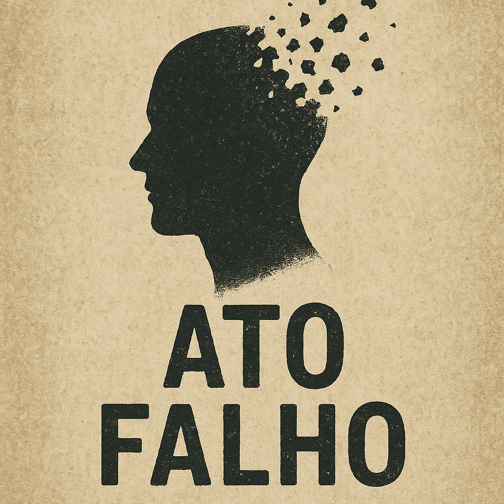

As ideias que sustentam toda a obra de Freud, explicadas com rigor e sem exigir formação prévia.
Ouça: Psicanálise e autoconhecimento
A obra de Sigmund Freud inicia pela caracterização dos papéis dos sonhos, dos esquecimentos, dos lapsos e dos atos falhos. Quinze anos mais tarde, ao publicar Introdução à Psicanálise, Freud recorre a esses fenômenos para conduzir o leitor à teoria psicanalítica e à dissimulação de que se vale a neurose, centro de seus estudos.
Toda conduta humana é, sempre, provida de sentido, ainda que este se apresente dissimulado ou representado. No mundo humano não há lugar para a inocência de intenções, mas tão somente para a inocência da inconsciência dela.
A atividade mental consciente é quem aproxima e relaciona os dados acessíveis e reveste-os de sentido. A atividade mental inconsciente é quem detém, regula e armazena os dados não acessíveis à organização, portanto ausentes à consciência. Alguns conteúdos, temporariamente inconscientes, podem ser trazidos à consciência a qualquer momento, às vezes com alguma resistência: fazem parte do que a psicanálise chama de pré-consciente. Já os conteúdos recalcados são sumariamente excluídos e não podem ser trazidos à consciência por vias diretas. O acesso a eles só é possível por técnicas e em circunstâncias excepcionais.
A censura é exercida entre um conjunto psíquico e outro: pode dificultar a passagem do pré-consciente para o consciente, ou impedir a passagem do inconsciente para o consciente. Entre o pré-consciente e o consciente, essa censura se manifesta através dos esquecimentos, lapsos e atos falhos, indicadores potenciais da existência de conflitos.
Os esquecimentos revelam conexões associativas com lembranças conflituosas que poderiam ameaçar a integridade psíquica, se evocadas. É uma censura bem sucedida em afastar um elemento da consciência. Hipoteticamente, quando o indivíduo esquece um nome, Patrick, por exemplo, talvez esteja evitando lembrar o que diz a música, "Patrick, meu amor", e o seu conteúdo sugestivo e desagradável para a pessoa em questão, ou ainda a época relativa ao período de sucesso da música.

Os atos falhos e os lapsos, ao contrário do esquecimento, significam uma censura mal sucedida: um intempestivo rompimento da vigilância que permite o vazamento repentino de um elemento suprimido, levando consigo até a superfície as reais disposições e intenções do indivíduo, embora, muitas vezes, se mantenha inconsciente, apenas contrariando ou comprometendo o discurso consciente. É quando, por exemplo, o indivíduo, ao tentar dizer "eu vou armar para o fulano", na realidade diz a mais pura verdade de seu ser, equivocadamente dizendo: "eu vou amar para o fulano".
Os sintomas neuróticos também são determinados por representações excluídas da consciência, de maneira radical e quase irreversível, fenômeno que a psicanálise denomina recalque. Esse e os demais mecanismos de defesa, como o deslocamento e a racionalização, serão tratados na próxima seção desta página.
As próximas seções desta página ainda serão adicionadas: os mecanismos de defesa, a pulsão e o desejo, o desenvolvimento psicossexual e o complexo de Édipo, e o sonho como realização de desejo.